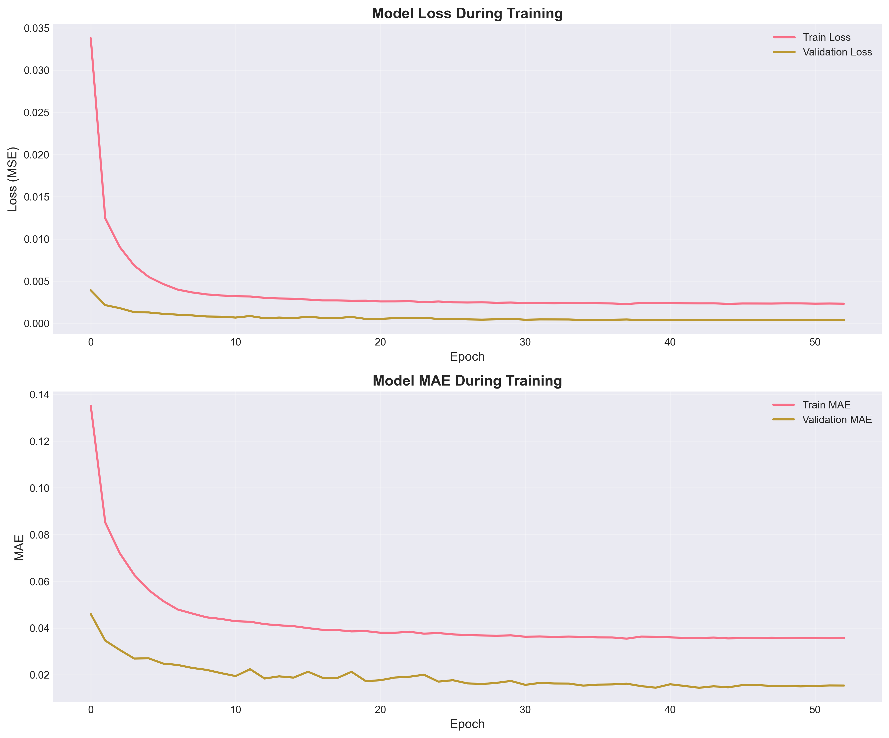
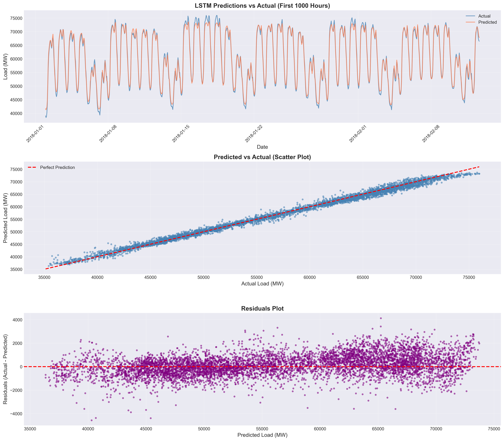

LSTM Model
Back to ModelsLSTM learns non-linear temporal dependencies from historical load (and optionally exogenous features), often improving performance during complex patterns compared to purely statistical baselines.
Outputs
- Metrics (JSON): assets/data/lstm/metrics.json
- Predictions (CSV): assets/data/lstm/lstm_predictions.csv
- Notebook (GitHub): Open lstm_model.ipynb
Figures

Training History
Loss/validation curves to verify convergence and overfitting behaviour.

Predictions Visualization
Actual vs predicted demand on the evaluation window.